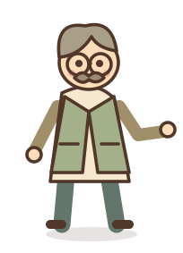

Lesson 19-20 · Mum
修改前 修改后
修改后 短卷发、宽脸、短外套与裤装
Lesson 25-26 · Mrs. Smith · 厨房
 修改前
修改前 修改后
修改后围裙与身前自然手势
Lesson 27-28 · Mrs. Smith · 客厅
修改前 修改后
修改后 同一身份，开衫与迎接姿态
Lesson 21-22 · Jane · 交书后
修改前 修改后
修改后 单手交书后，双手收回身前
Lesson 23-24 · Jane · 交杯后
 修改前
修改前 修改后
修改后托盘交出后，双臂自然放下
Lesson 21-22 · Man · 接书
 修改前
修改前 修改后
修改后单手接收
Lesson 23-24 · Man · 接杯子

修改前 修改后
修改后双手接收
缩小后一起看
19-20
Mum25-26
厨房27-28
客厅21-22
Jane · 书23-24
Jane · 杯子21-22
Man · 书23-24
Man · 杯子 19–20 小剧场 · 21–22 小剧场 · 23–24 小剧场 · 25–26 图鉴 · 27–28 纪念页